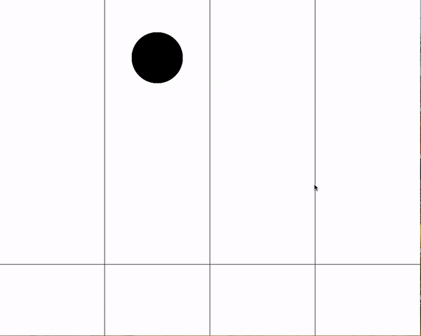
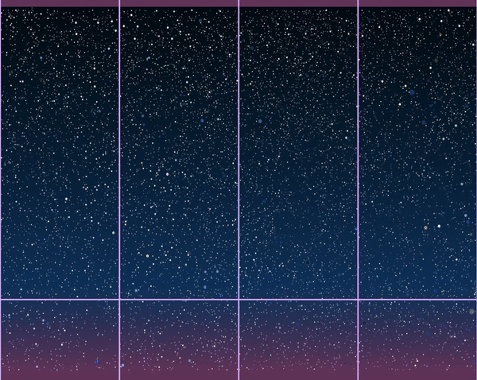
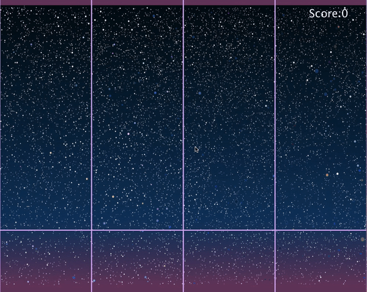
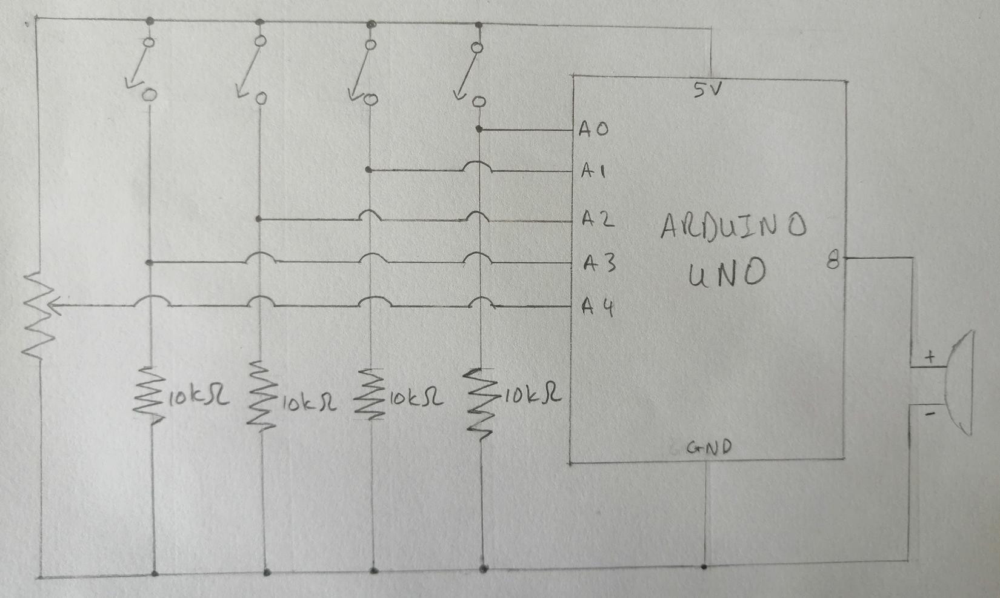
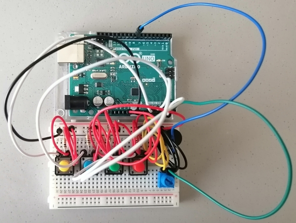
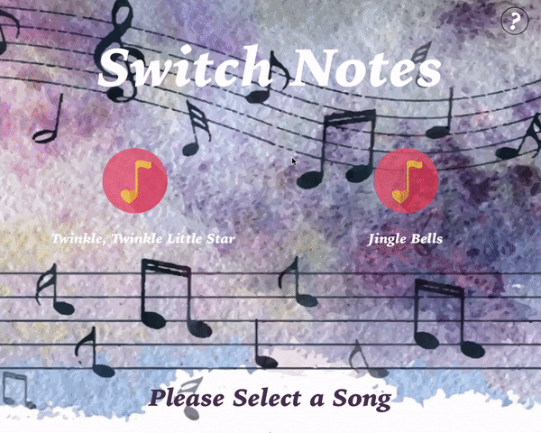
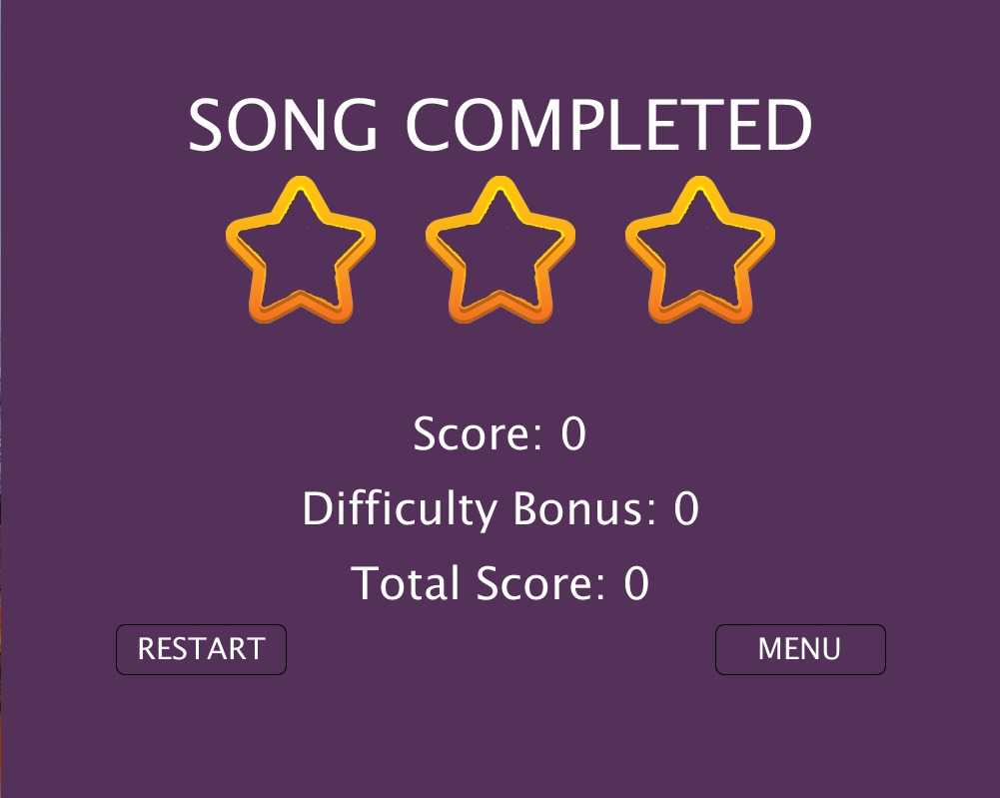

Switch Notes
Overview: Arudino based game where song notes fall down the screen in four different lanes. The user presses the matching switch for each lane to play the note and increase their score.
Early Design
I first began by doing a general outline of the game desig and the notes, which I initially just had as circles. The lanes were straightforward, just drawing lines and the same for the play zone. Each circle began to fall after the one before reached a certain point on the screen.

I then worked on compiling images for the gameplay, for it to match the existing functionality, as well as worked on the code for the user to "play" a note by pressing the right lane.


Arudino circuit
Next up was building the Arduino circuit, using 4 switches for the lanes, a toner to play the corresponding note, as well as a potentiometer to change the speed of the interval by which the notes are falling.


Final Design
Lastly, I added a start screen, help screen and end of level screen.

